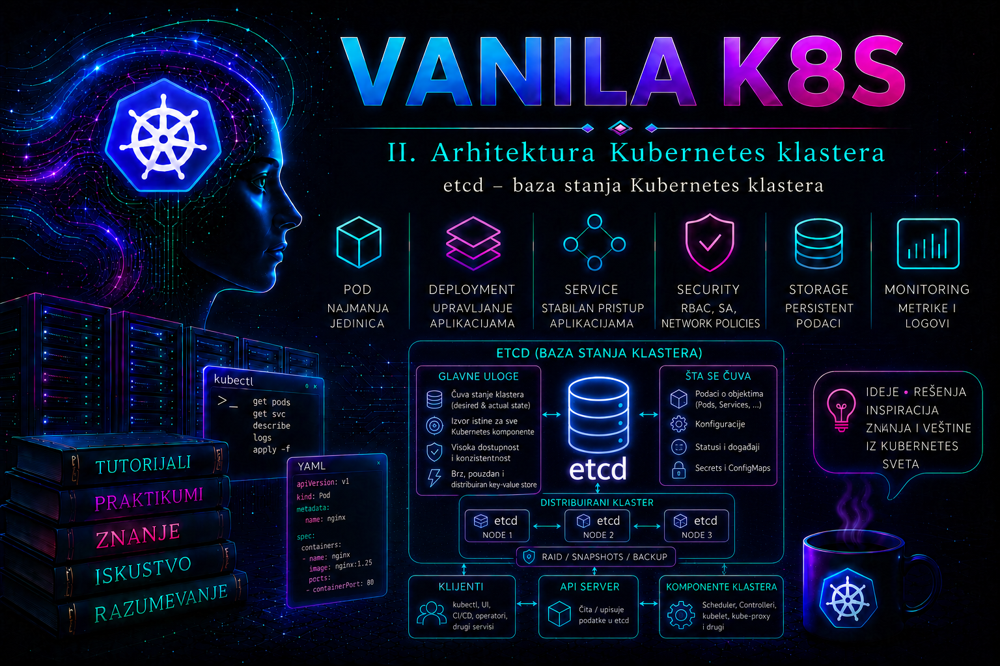

vanilla Kubernetes

Kubernetes klaster ne može da održava željeno stanje samo na osnovu procesa koji trenutno rade. Control plane mora trajno da pamti deklaracije korisnika, konfiguraciju klastera, identitete objekata, njihove verzije, statuse i rezultate odluka kontrolera. Tu ulogu obavlja etcd: distribuirano, konzistentno key-value skladište koje predstavlja trajni izvor stanja Kubernetes API-ja. API server je jedina standardna Kubernetes komponenta koja neposredno čita i menja podatke u etcd-u; scheduler, controller manager, kubelet i administratorski alati komuniciraju sa API serverom, a ne direktno sa bazom.
Zbog toga etcd nije obična pomoćna baza. Njegova dostupnost, integritet i latencija direktno određuju da li control plane može da prihvata promene. Kada etcd izgubi kvorum, postojeći Pod-ovi na worker čvorovima mogu nastaviti da rade, ali klaster više ne može pouzdano da registruje novo stanje, raspoređuje workload-e, obrađuje izmene ili sprovodi oporavak. Administrator zato etcd tretira kao jednu od najkritičnijih komponenti platforme: pristup mu je strogo ograničen, diskovi se pažljivo biraju, rezervne kopije se redovno proveravaju, a promene članstva i oporavak izvode se isključivo prema unapred testiranoj proceduri.
Uloga etcd-a u Kubernetes arhitekturi
Kubernetes API objekti predstavljaju deklarativni zapis željenog i zabeleženog stvarnog stanja klastera. Deployment opisuje koliko replika aplikacije treba da postoji, Service definiše stabilan način pristupa, ConfigMap i Secret nose konfiguracione podatke, Node objekat predstavlja registrovani čvor, dok statusna polja beleže rezultate rada kontrolera i agenata. API server validira zahtev, primenjuje autentikaciju, autorizaciju i admission pravila, serijalizuje objekat i upisuje odgovarajuće podatke u etcd.
etcd čuva podatke kao uređene ključeve i vrednosti. Kubernetes iznad toga gradi model API resursa, namespace-ova, revizija i praćenja promena. Svaka uspešna izmena povećava etcd reviziju. API server i njegovi klijenti koriste revizije za konzistentno čitanje i za mehanizam watch, kojim kontroleri saznaju da je objekat kreiran, izmenjen ili obrisan. Taj mehanizam omogućava da Kubernetes reaguje na promene bez stalnog ponovnog čitanja cele baze.
Administrator ne treba da uređuje Kubernetes podatke direktno pomoću komande etcdctl put ili etcdctl del. Takva promena zaobilazi API validaciju, admission kontrolu, autorizaciju, finalizere i očekivanu semantiku resursa. Rezultat mogu biti nekonzistentni ili nečitljivi objekti, gubitak podataka i kvar control plane-a. Direktan pristup etcd-u koristi se za proveru zdravlja, održavanje, snapshot i strogo kontrolisan oporavak, a upravljanje Kubernetes objektima obavlja se kroz API server.
Raft, članovi klastera i kvorum
etcd koristi konsenzusni algoritam Raft. Jedan član u datom trenutku ima ulogu lidera, dok ostali članovi prate njegov dnevnik. Zahtev za upis potvrđen je tek kada ga prihvati većina članova. Time se obezbeđuje da potvrđeni podaci ostanu konzistentni čak i kada pojedini član prestane da radi ili se mreža privremeno podeli.
| Broj članova | Potreban kvorum | Tolerisani trajni kvarovi | Administratorska ocena |
|---|---|---|---|
| 1 | 1 | 0 | Prihvatljivo samo za lokalni lab ili razvoj |
| 2 | 2 | 0 | Ne povećava toleranciju na kvar i uglavnom se izbegava |
| 3 | 2 | 1 | Uobičajen produkcioni minimum |
| 5 | 3 | 2 | Koristi se kada su opravdani dodatni kapacitet i tolerancija |
Neparan broj članova je praktično pravilo jer dodatni parni član ne povećava broj kvarova koje klaster može da podnese. Klaster sa četiri člana i dalje zahteva tri glasa i podnosi samo jedan kvar, kao i klaster sa tri člana, ali ima veći trošak replikacije. Dodavanje članova zato nije metod povećanja performansi: svaki upis mora biti potvrđen kvorumom, pa veći broj članova i veća mrežna udaljenost mogu povećati latenciju.
U referentnom okruženju ove lekcije koriste se tri control plane čvora: k8s-cp01, k8s-cp02 i k8s-cp03. kubeadm je postavio lokalni, odnosno stacked, etcd član na svakom čvoru. Članovi koriste TCP port 2380 za međusobnu peer komunikaciju, dok API server pristupa lokalnom članu preko TLS zaštićenog endpoint-a na portu 2379. Drugi podržan model jeste eksterni etcd klaster na zasebnim serverima. On pruža jasnije razdvajanje odgovornosti i kvarova, ali zahteva dodatne hostove, sertifikate, monitoring i poseban životni ciklus.
Konzistentnost, revizije i tok jednog zahteva
Kada administrator izvrši kubectl apply, zahtev stiže do API servera. Posle provere identiteta i prava, admission kontroleri mogu da izmene ili odbiju objekat. API server zatim proverava semantiku i konkurentne izmene, kodira objekat u format skladištenja i šalje transakciju etcd-u. Lider replicira zapis pratiocima, većina ga potvrđuje, transakcija postaje committed, a API server vraća uspešan odgovor klijentu.
Kontroleri koji prate odgovarajući resurs dobijaju događaj kroz watch tok. Na primer, Deployment kontroler kreira ReplicaSet, a scheduler kasnije bira čvor za novonastali Pod. Svaka od tih odluka proizvodi novu API operaciju i novu etcd reviziju. etcd zato nije skladište sadržaja kontejnerskih volumena, logova aplikacija ili image slojeva. On čuva stanje Kubernetes API-ja, dok aplikacioni podaci pripadaju odgovarajućim persistent volume sistemima, bazama i zasebnim backup procedurama.
Linearizabilno čitanje daje najsvežije potvrđeno stanje, ali zahteva koordinaciju sa liderom. Serijalizabilno čitanje može biti obrađeno lokalno i imati manju latenciju, ali može vratiti starije stanje. Kubernetes API server bira odgovarajuću semantiku u skladu sa operacijom. Administrator obično ne menja taj mehanizam, ali mora razumeti da spori ili nestabilni etcd upisi mogu izazvati spore API zahteve, istek vremena, prekid watch tokova i kašnjenje kontrolera.
Disk, mreža i kapacitet
etcd je posebno osetljiv na latenciju trajnog upisa. Potvrđena transakcija zahteva zapisivanje dnevnika na disk i komunikaciju sa većinom članova. Zbog toga su predvidiva I/O latencija, kvalitetan SSD ili NVMe uređaj i stabilna mreža važniji od samog velikog sekvencijalnog protoka. Deljenje sporog diska sa intenzivnim logovanjem, image skladištem ili drugim bazama može proizvesti povremene zastoje koji se u Kubernetesu vide kao spor API server i gubitak lidera.
Članovi treba da budu raspoređeni tako da kvar jednog fizičkog hosta, napajanja ili zone ne ukloni većinu. Istovremeno, mrežna latencija između njih mora ostati dovoljno mala i stabilna za Raft. Raspoređivanje jednog etcd klastera preko veoma udaljenih lokacija bez detaljnog merenja često je lošije od regionalnog klastera sa nezavisnim planom oporavka. etcd ne treba posmatrati kao geografski distribuiranu aplikacionu bazu.
Administrator prati veličinu baze, iskorišćenost backend kvote, trajanje fsync operacija, broj promena lidera, neuspele peer poruke i latenciju API servera. Popunjavanje particije sa --data-dir direktorijumom može zaustaviti član, a dostizanje backend kvote aktivira alarm NOSPACE i sprečava nove upise. Povećanje kvote bez analize samo odlaže problem; prvo treba utvrditi rast objekata, završiti kompakciju i defragmentaciju kada su opravdane i osloboditi prostor.
Kompakcija i defragmentacija
Pošto etcd održava istoriju revizija radi watch i MVCC funkcionalnosti, stari zapisi mogu povećavati logičku veličinu baze. Kompakcija uklanja istorijske revizije starije od izabrane tačke, ali ne mora odmah smanjiti fizičku veličinu datoteke. Defragmentacija reorganizuje backend bazu i vraća neiskorišćen prostor operativnom sistemu.
Ove operacije nisu sinonimi. Kompakcija menja dostupnu istoriju revizija, dok defragmentacija preuređuje fizičko skladište. Defragmentacija pojedinačnog člana privremeno blokira njegove operacije, pa se u višestrukom klasteru izvodi član po član, uz proveru zdravlja između članova. Ne pokreće se istovremeno nad svim endpoint-ima i ne sprovodi se naslepo samo zato što je datoteka velika.
Kubernetes i konkretna distribucija mogu automatski upravljati kompakcijom. Pre ručne intervencije administrator proverava verziju etcd-a, parametre procesa, metrike etcd_mvcc_db_total_size_in_bytes i etcd_mvcc_db_total_size_in_use_in_bytes, raspoloživi prostor i vendor proceduru. Značajna razlika između ukupne i aktivno korišćene veličine ukazuje da defragmentacija može vratiti prostor, ali se promena prvo testira i dokumentuje.
Bezbednost podataka i pristupa
etcd sadrži gotovo sve podatke dostupne kroz Kubernetes API. To može obuhvatiti Secret objekte, ServiceAccount podatke, konfiguraciju mreže, identitete workload-a, nazive sistema, interne endpoint-e i metapodatke organizacije. Zato pristup etcd sertifikatima praktično predstavlja visokoprivilegovan pristup celom klasteru.
Komunikacija klijenata i članova mora koristiti TLS. Client-to-server i peer-to-peer saobraćaj imaju različite sertifikate i namene. Privatni ključevi u kubeadm okruženju obično se nalaze ispod direktorijuma /etc/kubernetes/pki/etcd i dostupni su samo korisniku root. Portovi 2379 i 2380 ne izlažu se korisničkim, workload ili javnim mrežama. Firewall pravila dopuštaju isključivo poznate control plane i administrativne izvore.
TLS štiti podatke u prenosu, ali sam po sebi ne šifruje vrednosti u backend datoteci. Kubernetes Secret objekti se bez dodatne konfiguracije mogu nalaziti u etcd-u u obliku koji nije šifrovan na nivou API skladištenja. Produkcioni klaster zato treba da koristi Kubernetes encryption at rest konfiguraciju, a u odgovarajućim okruženjima KMS v2 provajder i spoljašnje upravljanje ključevima. Šifrovanje diska i snapshot fajlova predstavlja dodatni sloj, a ne zamenu za API-level enkripciju.
Snapshot se klasifikuje najmanje kao i sam klaster. Ne šalje se elektronskom poštom, ne ostavlja u javnom object storage-u i ne kopira na administratorski računar bez opravdanja. Pristup backup lokaciji mora biti auditovan, podaci šifrovani, a rok čuvanja usklađen sa bezbednosnom politikom i zahtevima oporavka.
Snapshot, kontinuitet rada i oporavak
Snapshot predstavlja konzistentnu kopiju etcd backend-a u određenom trenutku. U Kubernetes okruženju njime se čuva stanje API objekata, ali ne i sadržaj persistent volume-a, eksternih baza, kontejnerskog registra ili konfiguracija koje postoje samo izvan API-ja. Potpun plan oporavka zato mora uskladiti etcd snapshot sa backup-om aplikacionih podataka i spoljašnjih zavisnosti.
Snapshot može biti napravljen onlajn pomoću etcdctl snapshot save sa aktivnog endpoint-a. Kopiranje same datoteke member/snap/db sa diska člana moguće je samo uz precizno razumevanje postupka; takva kopija može izgubiti podatke koji su još u write-ahead logu. Za rutinski backup prednost ima zvanični snapshot API. Status i integritet snapshot-a proveravaju se alatom etcdutl snapshot status kompatibilnim sa korišćenom verzijom etcd-a.
Backup nije potvrđen time što fajl postoji. Mora biti proverljiv, prenet u zaštićeno odvojeno skladište i periodično vraćen u izolovanom okruženju. Probni restore potvrđuje da su dostupni odgovarajući alati, sertifikati, konfiguracioni podaci, dokumentacija i osoblje koje razume proceduru. RPO određuje koliko često se snapshot pravi, a RTO koliko brzo control plane mora biti vraćen.
Restore nije isto što i povratak jednog pokvarenog člana. Ako je kvorum zdrav, trajno otkazani član se obično uklanja i zamenjuje novim članom prema proceduri za članstvo. Snapshot restore se koristi kada je izgubljen kvorum, kada je došlo do logičkog brisanja ili korupcije koju treba vratiti na ranije stanje, ili kada se izvodi kontrolisan disaster recovery. Restore kreira novi logički etcd klaster sa novim identitetima članova. Ne sme se improvizovati nad delimično aktivnim starim klasterom.
Provera zdravlja i razlikovanje simptoma
Zdravlje etcd-a proverava se na više nivoa. etcdctl endpoint health potvrđuje da endpoint može da obradi probni zahtev. endpoint status prikazuje lidera, Raft indeks, reviziju, verziju i veličinu baze. member list potvrđuje očekivano članstvo. Kubernetes API provere, logovi API servera i Prometheus metrike pokazuju kako stanje etcd-a utiče na ostatak control plane-a.
| Simptom | Mogući uzrok | Prva provera |
|---|---|---|
| Jedan endpoint nije zdrav, ostala dva jesu | Kvar procesa, hosta, diska, sertifikata ili mreže jednog člana | Stanje static Pod-a, kubelet log i peer dostupnost tog člana |
| Svi endpoint-i sporo odgovaraju | Visoka disk latencija, mrežni zastoji ili preveliko opterećenje | Disk fsync metrike, prostor, API latencija i promene lidera |
| Alarm NOSPACE | Dostignuta backend kvota | etcdctl alarm list, veličina baze i slobodan prostor |
| API čitanje radi, upisi otkazuju | Gubitak kvoruma, NOSPACE ili problem sa potvrdom upisa | Endpoint health svih članova i etcd/API server logovi |
| Česte promene lidera | Nestabilna mreža, spori diskovi, CPU zastoji ili loše timeout vrednosti | Raft i peer metrike, sistemski resursi i vremenska sinhronizacija |
Normalan izbor novog lidera tokom kontrolisanog restarta jednog člana nije isto što i neprekidne promene lidera bez planirane aktivnosti. Jedan nedostupan član u tročlanom klasteru jeste degradirano, ali funkcionalno stanje; drugi kvar u tom trenutku znači gubitak kvoruma. Administrator zato ne čeka da korisnici prijave problem, već odmah obnavlja redundansu.
Integrisani praktikum: verifikovan snapshot i izolovani probni restore
Poslovni i tehnički kontekst. Organizacija koristi kubeadm Kubernetes klaster sa tri control plane čvora: k8s-cp01, k8s-cp02 i k8s-cp03. etcd radi kao static Pod na svakom čvoru. Pre planirane nadogradnje control plane-a administrator mora da napravi proverljiv snapshot, sačuva dokaz o stanju i potvrdi mogućnost vraćanja podataka bez ugrožavanja produkcionog klastera.
Cilj. Napraviti onlajn snapshot sa čvora k8s-cp01, proveriti njegov status i checksum, kopirati ga u zaštićeno backup skladište i izvršiti probni restore u izolovani direktorijum. Praktikum ne prebacuje produkcioni API server na vraćenu bazu; time se proverava upotrebljivost rezervne kopije uz minimalan operativni rizik.
Referentno okruženje. Kubernetes je instaliran pomoću kubeadm-a. Lokalni etcd endpoint je https://127.0.0.1:2379. Sertifikati se nalaze u /etc/kubernetes/pki/etcd. Na čvoru postoje binarni alati etcdctl i etcdutl čija je minor verzija kompatibilna sa serverom. Backup direktorijum je /var/backups/kubernetes/etcd, a probni restore se smešta u /var/lib/etcd-restore-test.
Preduslovi i prava. Potrebni su SSH pristup čvoru k8s-cp01, kontrolisani sudo pristup za čitanje etcd klijentskog ključa i pisanje u backup direktorijum, kao i Kubernetes pravo za čitanje stanja control plane čvorova. Direktan etcd klijentski sertifikat ne kopira se van control plane čvora. Promena mora imati evidentiran change zahtev, vlasnika, vreme izvođenja, RPO, RTO i odobrenu lokaciju rezervne kopije.
-
Potvrditi identitet čvora, verzije i stanje Kubernetes API-ja.
Pre backup-a administrator proverava da radi na očekivanom serveru i da klaster nije već u incidentnom stanju. Snapshot napravljen tokom neprepoznatog kvara može biti tehnički validan, ali nedovoljan kao jedina tačka oporavka.
Validacija: hostname mora odgovarati čvoruhostname -f sudo etcdctl version sudo etcdutl version kubectl get nodes -o wide kubectl get --raw='/readyz?verbose'k8s-cp01; alati moraju biti kompatibilni sa serverskom verzijom; sva tri control plane čvora treba da buduReady, a API readyz provere da vrate uspeh. Ako API ili etcd već pokazuju grešku, backup se može napraviti radi očuvanja trenutnog stanja, ali se planirana nadogradnja odlaže i otvara incident. -
Definisati TLS parametre i proveriti članstvo.
Koristi se lokalni endpoint i sertifikati namenjeni etcd administrativnom klijentu. Promenljive važe samo u root shell-u otvorenom za ovu proceduru.
Validacija: izlaz treba da prikaže tri pokrenuta člana sa očekivanim imenima i peer adresama zasudo -i export ETCDCTL_API=3 export ETCD_ENDPOINTS="https://127.0.0.1:2379" export ETCD_CACERT="/etc/kubernetes/pki/etcd/ca.crt" export ETCD_CERT="/etc/kubernetes/pki/etcd/healthcheck-client.crt" export ETCD_KEY="/etc/kubernetes/pki/etcd/healthcheck-client.key" etcdctl \ --endpoints="${ETCD_ENDPOINTS}" \ --cacert="${ETCD_CACERT}" \ --cert="${ETCD_CERT}" \ --key="${ETCD_KEY}" \ member list --write-out=tablek8s-cp01,k8s-cp02ik8s-cp03. Neočekivani dodatni član, član bez imena ili pogrešna peer adresa zahtevaju istragu pre nastavka. -
Proveriti zdravlje i međusobnu usklađenost endpoint-a.
Iz static Pod manifesta preuzimaju se stvarne client adrese članova. U referentnom okruženju to su
10.20.0.11,10.20.0.12i10.20.0.13. Sertifikat mora sadržati odgovarajuće SAN vrednosti; u suprotnom se koriste imena navedena u sertifikatu i manifestu.
Validacija: sva tri endpoint-a moraju biti zdrava, tačno jedan član treba da bude lider, a primenjeni Raft indeksi i revizije treba da budu jednaki ili kratkotrajno veoma bliski. Lista alarma treba da bude prazna. Veliko i trajno zaostajanje jednog člana nije razlog da se on odmah briše; prvo se proveravaju mreža, disk i logovi.export ETCD_ALL_ENDPOINTS="https://10.20.0.11:2379,https://10.20.0.12:2379,https://10.20.0.13:2379" etcdctl \ --endpoints="${ETCD_ALL_ENDPOINTS}" \ --cacert="${ETCD_CACERT}" \ --cert="${ETCD_CERT}" \ --key="${ETCD_KEY}" \ endpoint health --cluster --write-out=table etcdctl \ --endpoints="${ETCD_ALL_ENDPOINTS}" \ --cacert="${ETCD_CACERT}" \ --cert="${ETCD_CERT}" \ --key="${ETCD_KEY}" \ endpoint status --cluster --write-out=table etcdctl \ --endpoints="${ETCD_ALL_ENDPOINTS}" \ --cacert="${ETCD_CACERT}" \ --cert="${ETCD_CERT}" \ --key="${ETCD_KEY}" \ alarm list -
Kreirati zaštićeni backup direktorijum i metapodatke promene.
Direktorijum je dostupan samo root korisniku. Ime snapshot-a sadrži UTC vreme kako bi redosled kopija bio nedvosmislen.
Validacija: komandeinstall -d -m 0700 -o root -g root /var/backups/kubernetes/etcd BACKUP_TS="$(date -u +%Y%m%dT%H%M%SZ)" SNAPSHOT="/var/backups/kubernetes/etcd/k8s-prod-etcd-${BACKUP_TS}.db" METADATA="/var/backups/kubernetes/etcd/k8s-prod-etcd-${BACKUP_TS}.txt" { echo "cluster=k8s-prod" echo "source_node=$(hostname -f)" echo "created_utc=${BACKUP_TS}" echo "etcdctl_version=$(etcdctl version | tr '\n' ' ')" echo "snapshot=${SNAPSHOT}" } > "${METADATA}" chmod 0600 "${METADATA}"statils -ldtreba da potvrde vlasnikarooti dozvole0700za direktorijum, odnosno0600za metapodatke.stat -c '%U:%G %a %n' /var/backups/kubernetes/etcd "${METADATA}" -
Napraviti onlajn snapshot kroz etcd API.
Operacija čita konzistentno stanje aktivnog endpoint-a i ne zahteva zaustavljanje etcd-a.
Validacija: komanda mora da prijavi uspešno čuvanje snapshot-a. Fajl mora postojati, imati nenultu veličinu i biti čitljiv samo root korisniku.etcdctl \ --endpoints="${ETCD_ENDPOINTS}" \ --cacert="${ETCD_CACERT}" \ --cert="${ETCD_CERT}" \ --key="${ETCD_KEY}" \ snapshot save "${SNAPSHOT}" chmod 0600 "${SNAPSHOT}" synctest -s "${SNAPSHOT}" stat -c '%U:%G %a %s bytes %n' "${SNAPSHOT}" -
Proveriti status snapshot-a i napraviti nezavisni checksum.
etcdutl snapshot statusproverava strukturu snapshot-a i prikazuje hash, reviziju, broj ključeva i veličinu. SHA-256 checksum služi za proveru integriteta tokom prenosa i čuvanja.
Validacija: status mora biti pročitan bez greške, revizija i broj ključeva moraju biti veći od nule, a sledeća komanda mora vratitietcdutl snapshot status "${SNAPSHOT}" --write-out=table | tee -a "${METADATA}" sha256sum "${SNAPSHOT}" | tee "${SNAPSHOT}.sha256" chmod 0600 "${SNAPSHOT}.sha256"OK.sha256sum --check "${SNAPSHOT}.sha256" -
Izvesti negativni test integriteta na bezbednoj kopiji.
Test pokazuje da procedura zaista otkriva izmenjen fajl. Produkcioni snapshot se ne menja.
Očekivani rezultat: status oštećene kopije treba da završi greškom zbog neusaglašenog hash-a ili nevažeće baze. Uspešno čitanje oštećene kopije zahteva proveru da li je promena zaista pogodila proveravani deo fajla; test se ne smatra uspešnim samo zato što je komanda izvršena. Originalni snapshot se ponovo proverava komandomCORRUPT_COPY="/tmp/k8s-prod-etcd-corrupt-test.db" cp --reflink=auto "${SNAPSHOT}" "${CORRUPT_COPY}" printf 'CORRUPTION-TEST' | dd of="${CORRUPT_COPY}" bs=1 seek=4096 conv=notrunc status=none etcdutl snapshot status "${CORRUPT_COPY}" --write-out=table rm -f "${CORRUPT_COPY}"sha256sum --check. -
Izvršiti izolovani probni restore.
Upozorenje: restore ne sme da koristi aktivni direktorijum
/var/lib/etcd. Njegovo brisanje ili prepisivanje na produkcionom čvoru može zaustaviti control plane i prouzrokovati gubitak podataka. Koristi se isključivo namenski test direktorijum.
Validacija: restore mora da se završi bez greške, a direktorijum treba da sadrži novu strukturuRESTORE_DIR="/var/lib/etcd-restore-test" if [ -e "${RESTORE_DIR}" ]; then echo "Direktorijum ${RESTORE_DIR} već postoji; prekid radi zaštite podataka." >&2 exit 1 fi etcdutl --data-dir="${RESTORE_DIR}" snapshot restore "${SNAPSHOT}" chown -R root:root "${RESTORE_DIR}" chmod 0700 "${RESTORE_DIR}"membersa snapshot i WAL podacima. Ovaj korak potvrđuje da je snapshot moguće raspakovati u novu etcd bazu, ali još ne predstavlja potpunu vežbu vraćanja Kubernetes control plane-a.test -d "${RESTORE_DIR}/member/snap" test -d "${RESTORE_DIR}/member/wal" find "${RESTORE_DIR}" -maxdepth 3 -type f -printf '%p %s bytes\n' -
Sačuvati paket u odobreno udaljeno skladište.
Produkciona implementacija treba da koristi šifrovani backup sistem ili object storage sa TLS-om, server-side enkripcijom, verzionisanjem, ograničenim servisnim identitetom i politikom zadržavanja. Sledeći primer pretpostavlja da organizacioni alat
backup-uploadveć postoji kao odobren preduslov i da ne zahteva unos tajne u komandnoj liniji.
Validacija: alat mora vratiti identifikator objekta i potvrdu uspešnog prenosa. U udaljenom skladištu proveravaju se veličina, checksum, vreme, politika zadržavanja i zabrana anonimnog pristupa. Identifikator kopije upisuje se u change zahtev i evidenciju disaster recovery kopija.backup-upload \ --classification=confidential \ --destination=kubernetes-etcd/k8s-prod/ \ "${SNAPSHOT}" "${SNAPSHOT}.sha256" "${METADATA}" -
Pregledati relevantne logove.
U kubeadm okruženju etcd je static Pod kojim upravlja kubelet. Kubernetes log može se pročitati pomoću
kubectl logs, dok kubelet i container runtime logovi pomažu kada API nije dostupan ili se kontejner ne pokreće.
Tumačenje: traže se poruke o sporim apply operacijama, prekoračenju vremena, gubitku peer veze, promenama lidera, neuspešnom fsync-u, nevažećim sertifikatima i nedostatku prostora. Pojedinačna informativna poruka bez uticaja nije isto što i ponavljajući obrazac u više članova.kubectl -n kube-system logs etcd-k8s-cp01 --since=30m journalctl -u kubelet --since '-30 minutes' --no-pager crictl ps -a --name etcd crictl logs "$(crictl ps -a --name etcd -q | head -n 1)" -
Očistiti samo izolovani test restore.
Brisanje se obavlja tek kada su rezultati evidentirani. Promenljiva se eksplicitno proverava kako bi se sprečilo brisanje pogrešne putanje.
Rollback i cleanup: praktikum nije menjao aktivni etcd klaster, pa produkcioni rollback nije potreban. Ako snapshot ili provera nisu uspešni, ne koristi se nevalidna kopija, ne briše se prethodni uspešan backup i planirana nadogradnja se ne započinje. Novi snapshot se pravi tek nakon otklanjanja uzroka.case "${RESTORE_DIR}" in /var/lib/etcd-restore-test) rm -rf --one-file-system "${RESTORE_DIR}" ;; *) echo "Neočekivana putanja; cleanup je odbijen." >&2 exit 1 ;; esac test ! -e "${RESTORE_DIR}"
Merljivi kriterijumi prihvatanja. Sva tri etcd endpoint-a su zdrava i bez alarma; članstvo sadrži tačno tri očekivana člana; snapshot ima nenultu veličinu i validan status; lokalni SHA-256 test vraća OK; negativni test otkriva oštećenu kopiju; izolovani restore kreira očekivanu member/snap i member/wal strukturu; udaljena kopija ima potvrđen checksum i politiku zadržavanja; aktivni API server ostaje spreman tokom cele procedure; dokaz o izvršenju, rezultat i identifikator backup-a evidentirani su u change i DR dokumentaciji.
Tipične greške i bezbedan odgovor administratora
- Snapshot se čuva samo na istom control plane disku. Takva kopija ne štiti od kvara hosta, diska, krađe ili greške administratora. Snapshot se prenosi u fizički ili administrativno odvojeno, šifrovano skladište.
- Postojanje fajla smatra se dokazom uspešnog backup-a. Potrebni su status, checksum, evidentiran prenos i periodični probni restore.
- Nezdravi član se odmah uklanja. U tročlanom klasteru pogrešno uklanjanje člana tokom drugog problema može ugroziti kvorum. Najpre se potvrđuju članstvo, većina, identitet člana i uzrok kvara.
- Svi članovi se defragmentiraju istovremeno. Time se može blokirati čitav klaster. Operacija se izvodi serijski, uz proveru zdravlja posle svakog člana.
- Direktno se menjaju Kubernetes ključevi u etcd-u. Promena zaobilazi Kubernetes API pravila i može napraviti nekonzistentno stanje. Objekti se menjaju pomoću podržanog API-ja.
- Restore se pokreće preko aktivnog data direktorijuma. Bez izolacije i kompletnog plana to je potencijalno destruktivna radnja. Prvo se izvodi probni restore u nov direktorijum ili odvojeno DR okruženje.
- Dodavanje četvrtog člana smatra se povećanjem dostupnosti. Četiri člana i dalje podnose samo jedan trajni kvar. Topologija se zasniva na potrebnom kvorumu, failure domenima i izmerenoj latenciji.
- TLS se poistovećuje sa enkripcijom podataka na disku. TLS štiti prenos; encryption at rest, KMS, šifrovanje backup-a i diska rešavaju druge slojeve rizika.
Administratorske prakse
- Zdravlje i članstvo. Komande
etcdctl endpoint health --cluster,endpoint status --cluster,member listialarm listizvršavaju se kroz monitoring neprekidno, a ručno pre i posle control plane promene. Reakciju zahtevaju nedostupan član, neočekivano članstvo, alarm, trajno zaostajanje revizije ili ponavljane promene lidera. Prva reakcija je očuvanje kvoruma i prikupljanje logova, ne uklanjanje člana. Rezultat se dokumentuje u monitoring sistemu i change zapisu, a uspeh meri dostupnošću sva tri očekivana endpoint-a bez alarma. - Disk i backend kvota. Prate se slobodan prostor, inode-i,
etcd_mvcc_db_total_size_in_bytes, aktivno korišćena veličina i fsync histogrami. Provera je stalna, uz kapacitivni pregled najmanje mesečno. Reakcija počinje pre nego što slobodan prostor ili backend kvota postanu kritični; organizacija definiše upozorenja, na primer pri 70% i kritični alarm pri 85% iskorišćenosti. Dokumentuju se trend, uzrok rasta i odobrena korektivna akcija. - Latencija i promene lidera. Prometheus i etcd metrike prate trajanje WAL fsync-a, backend commit-a, peer round-trip vreme i broj promena lidera. Svaki ponavljajući rast iznad dokumentovanog baznog nivoa, naročito uz API timeout poruke, zahteva proveru storage-a, CPU zastoja i mreže. Uspeh se meri povratkom latencije u bazni opseg i odsustvom novih neželjenih izbora lidera.
- Backup. Snapshot čuva Kubernetes API stanje. Uobičajeno se pravi najmanje jednom dnevno i pre svake rizične promene, a češće kada RPO to zahteva. Čuva se u šifrovanom, odvojenom skladištu sa kontrolom pristupa, verzionisanjem i definisanim rokom zadržavanja. Svaka kopija dobija checksum i metapodatke o klasteru, reviziji, vremenu i verziji alata.
- Probni restore. Najmanje kvartalno, kao i nakon značajne promene verzije ili backup sistema, snapshot se vraća u izolovano okruženje. Potpuna DR vežba treba da podigne odvojeni etcd i testni API server, potvrdi čitanje očekivanih reprezentativnih objekata i izmeri RTO. Uspeh nije samo pokrenut proces, već funkcionalan API, potvrđeno članstvo, očekivani objekti i dokumentovano vreme oporavka.
- Sertifikati i pristup. Rok važenja etcd CA, server, peer i client sertifikata proverava se automatizovano i pre svake nadogradnje. Privatni ključevi ostaju sa minimalnim dozvolama, a pristup se auditira. Istek koji ulazi u organizacioni prag za obnovu zahteva planiranu rotaciju i proveru zdravlja posle svakog člana.
- Promene članstva i verzije. Dodavanje, uklanjanje ili zamena člana radi se samo uz potvrđen kvorum, svež verifikovan snapshot, tačne member ID vrednosti i zvaničnu proceduru za instaliranu verziju. Nadogradnje se izvode podržanim redosledom i član po član. Dokumentuju se početno stanje, komande, identiteti članova, rezultat svake validacije i plan povratka.
- Vremenska sinhronizacija i failure domeni. NTP stanje, mrežna dostupnost i fizički raspored control plane čvorova proveravaju se kontinuirano i nakon infrastrukturnih promena. Dva ili tri člana na istom hipervizoru, storage uređaju ili napajanju predstavljaju skriveni zajednički kvar. Uspeh se meri time da kvar jednog definisanog failure domena ne uklanja kvorum.
Završna kontrolna lista
- Potvrđeno je da etcd-u direktno pristupa API server, a da se Kubernetes objekti ne menjaju pomoću direktnih
etcdctl putilideloperacija. member listprikazuje tačno tri očekivana člana:k8s-cp01,k8s-cp02ik8s-cp03.endpoint health --clusterpotvrđuje da su sva tri endpoint-a zdrava, aalarm listne vraća aktivne alarme.endpoint status --clusterprikazuje tačno jednog lidera i međusobno usklađene revizije i Raft indekse.- Provereni su slobodan prostor, backend veličina, fsync latencija i broj promena lidera.
- Snapshot je napravljen kroz etcd snapshot API, ima nenultu veličinu i uspešan
etcdutl snapshot status. - SHA-256 provera snapshot-a vraća
OK, a kontrolisani negativni test prepoznaje oštećenu kopiju. - Probni restore je uspešno kreirao izolovanu
member/snapimember/walstrukturu bez izmene aktivnog/var/lib/etcddirektorijuma. - Snapshot, checksum i metapodaci nalaze se u šifrovanom odvojenom skladištu sa potvrđenom politikom zadržavanja.
- Rezultat backup-a, identifikator udaljene kopije, revizija, vreme i rezultat restore testa evidentirani su u change i disaster recovery dokumentaciji.
- Pre nadogradnje ili promene članstva postoji odobren rollback plan i poznat prag za eskalaciju.
Zaključak
Administrator nakon ove lekcije treba da razume da etcd nije samo servis koji „čuva konfiguraciju”, već konzistentni sistem zapisa na kome se zasniva čitav Kubernetes control plane. Mora da poveže Raft kvorum, lidera, revizije, disk latenciju, peer komunikaciju i watch tokove sa ponašanjem API servera i kontrolera. Time može da razlikuje lokalni kvar jednog člana od gubitka kvoruma, normalan izbor lidera od hronične nestabilnosti i logički rast baze od fizičke fragmentacije.
U praktičnom radu administrator treba da ume da proveri članstvo, zdravlje, alarme, revizije i veličinu baze; da napravi i kriptografski proveri snapshot; da izvede izolovani probni restore; da pronađe static Pod, kubelet i container runtime logove; i da dokumentuje dokaz da je rezervna kopija upotrebljiva. Mora da zna da snapshot etcd-a ne obuhvata aplikacione volume podatke i da uspešan restore baze nije automatski dokaz potpunog oporavka svih poslovnih servisa.
Najveći produkcioni rizici nastaju kada se direktno menjaju ključevi, član uklanja bez potvrđenog kvoruma, svi članovi održavaju istovremeno, backup čuva samo lokalno ili restore pokreće preko aktivnog data direktorijuma. Takve operacije prelaze granicu rutinske administracije i zahtevaju odobrenu proceduru, svež verifikovan snapshot, koordinaciju vlasnika platforme i jasno definisan povratak.
Razlog za eskalaciju postoji kada nije moguće potvrditi većinu članova, kada se članstvo razlikuje od dokumentovane topologije, kada postoji sumnja na korupciju ili kompromitovanje sertifikata, kada su izgubljeni i etcd i povezani aplikacioni podaci, ili kada dostupni snapshot nije prošao proveru integriteta. Odgovoran administrator tada ne pokušava nasumične destruktivne komande. On zaustavlja planiranu promenu, čuva dokaze, štiti preostali kvorum i uključuje odgovorne za Kubernetes platformu, storage, mrežu, bezbednost i kontinuitet poslovanja.